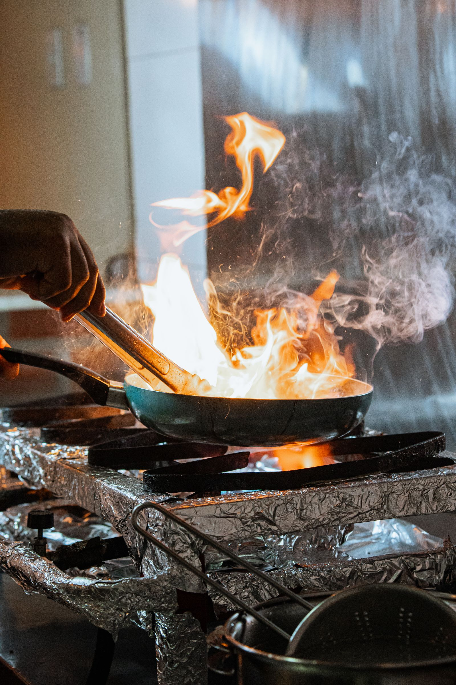

Method & Safety
The dramatic part is easy.
Control is the work.
Anyone can pour nitrogen and make a cloud. This page is the other ninety percent: how the studio is run, how an engagement proceeds, and the safety protocol that is printed, signed and sent to insurers before a dewar is opened.
The Chef
Nadia Ferro
Fifteen years in professional kitchens, the first six of them in pastry — where temperature is already destiny. Chocolate is tempered inside a window of a few degrees; sugar changes its mind at printed temperatures and not one degree sooner. The rest of this practice is that pastry discipline, extended to both ends of the thermometer.
After stages in professional kitchens in Spain and Denmark, and a season running the cold section of a large hotel kitchen — where the blast chiller's log mattered more than anyone's opinion — she opened Cryo & Flame in Valencia in 2019. The studio takes a small number of engagements at a time, on purpose: every one of them is cooked by the person whose name is on the log.
The rule the studio is known by is a dull one, and it is the whole business: an effect has to earn its temperature. If a dish is the same at room temperature, it is served at room temperature. Nitrogen is ordered when freezing fast changes the texture, a bath when evenness changes the eating, a pan at 230 °C when browning changes the flavour. Otherwise the thermometer stays in its drawer.
The figures on the right are the practice's own count, kept the way the log keeps everything — plainly, and with the unglamorous entries left in.

The ledger, in figures
- SEASONS OF EVENTS
- 6
- RESTAURANT MENUS BUILT
- 11
- MASTERCLASS DAYS TAUGHT
- 41
- GUESTS SERVED PER EVENING
- ≤ 60
- SEALED VESSELS FROZEN
- 0
The practice's own count, as logged. The last line is a policy, not a boast.
How an Engagement Runs
Five stages, all of them in writing.
- 01
The brief
One page, written: the occasion, the guests, the effect you think you want — and the room it has to happen in. Half of this work is discovering that the room, not the recipe, is the constraint.
- 02
The bench test
The effect done small, in the studio: timed, costed, photographed. If it cannot survive being done small and slow, it will not survive a service — and you find that out here, cheaply.
- 03
The proposal
The price taken from the printed rate card. Nitrogen and ingredients at cost, with the receipts to come. The safety protocol for your room attached, in writing, before any deposit is mentioned.
- 04
The rehearsal
A full run at service speed, in your space, with your team — including the part where something goes wrong on purpose, so the fix is rehearsed too.
- 05
Service, and the wash-up
On the night, the studio cooks and logs: temperatures, quantities, timings, what failed. The log is yours to keep. It is how the next event gets cheaper, and safer, than this one.
Printed, Signed, Sent to Insurers
The safety protocol
- Food-grade nitrogen only (additive E941), from an industrial-gas supplier. An unlabelled dewar does not enter the kitchen.
- Dewars upright, secured, vented. The vented cap stays fitted; a dewar is never sealed, ever — warming nitrogen expands about 700-fold.
- Ventilation is calculated, not assumed: litres ordered × 0.7 = cubic metres of gas, and the room must be able to clear it.
- Cryogenic gloves and eye protection at every pour. Sleeves down. No exceptions made for photographs.
- The boil-off rule: nothing is served until the last trace of nitrogen has boiled away — judged by the timer, never by a guest's impatience.
- Dry ice never loose in food or drink. Caged infusers, cloches and perforated plates only.
- Guests never handle nitrogen or dry ice. At events, children stay behind the station line.
- Every service is logged: quantities, temperatures, incidents — including the uneventful ones.
Sourcing & Terms
Plainly, before you book
- Sourcing. Ingredients come from the client's market list or the studio's suppliers, agreed dish by dish. Nitrogen and dry ice arrive from the gas supplier with their invoices, which are shown with the final bill.
- Deposit. 40% books the date; the balance falls due on the day of service.
- Cancellation. The deposit is returned in full up to 30 days out, half up to 14 days, and not inside 14 — by then the gas is ordered and the date has been held against other work.
- Travel. Beyond Valencia city at cost. A station further than a day's travel takes a second trained hand, quoted in the proposal — never improvised on the night.
- Insurance. The studio works insured for public liability, and this protocol is available to your insurer before you book, not after.
- Allergies. Menus are agreed in writing with allergens declared dish by dish. The studio does not cook for a guest list it has not seen.